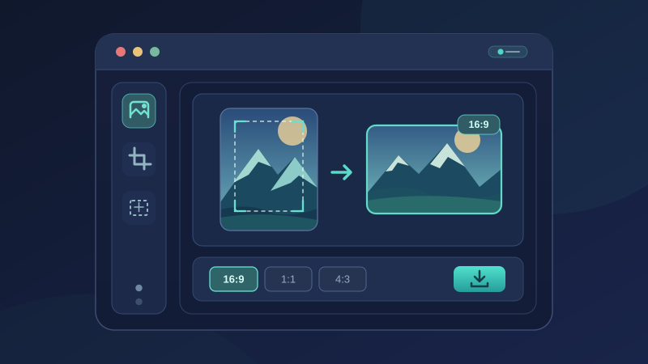
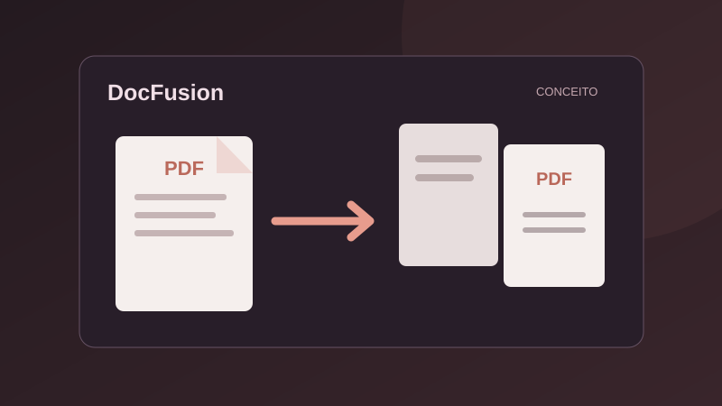
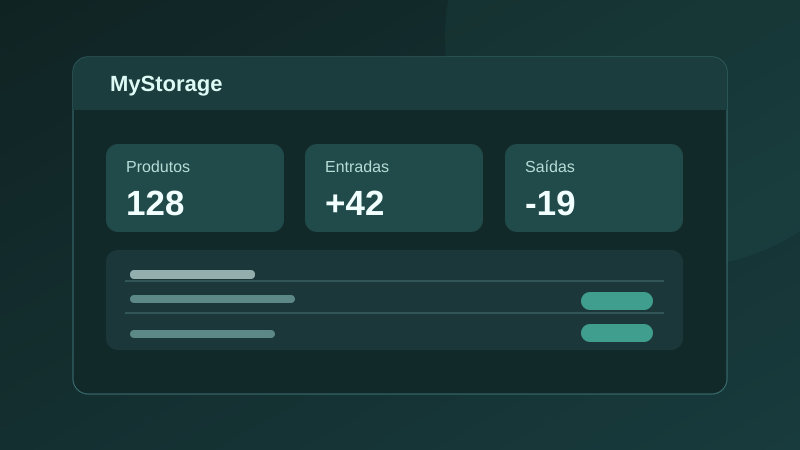

PORTFÓLIO PESSOAL
Mateus Canjerana
Desenvolvedor Web
Olá, sou formado em Ciência da Computação e gosto de transformar ideias em experiências web funcionais, acessíveis e bem construídas.
Fale comigoSobre mim
Minha trajetória e o que me move
sempre aprendendo UTF-8
Minha formação em Ciência da Computação me deu contato com diferentes áreas da tecnologia. Hoje, estou aprofundando meus conhecimentos em desenvolvimento web, especialmente HTML, CSS e JavaScript, e construindo projetos que aplicam esses fundamentos.
Também tenho experiência com PHP, MySQL, Git e GitHub. Meu objetivo é desenvolver interfaces claras e soluções que resolvam problemas reais.
HTML5CSS3JavaScriptPHPMySQL
Portfólio
Projetos web e experiências práticas

PHP · MYSQL
MyStorage
Sistema CRUD para controle de produtos e estoque.
Sem demo pública

PRODUTIVIDADE
PlannerQuest
Planner pessoal para organizar tarefas, hábitos e estudos.
Em construção